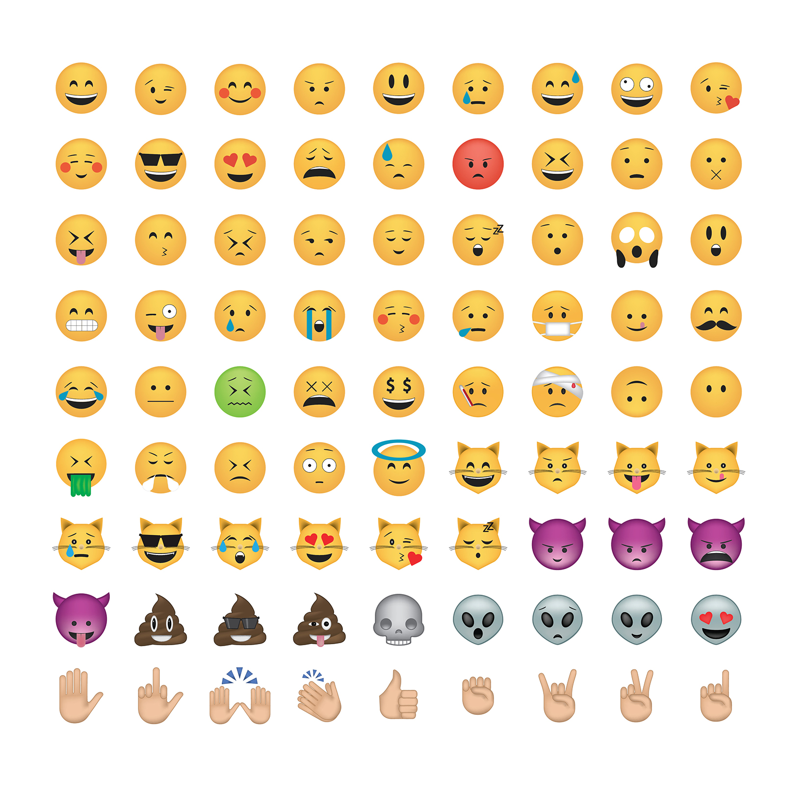
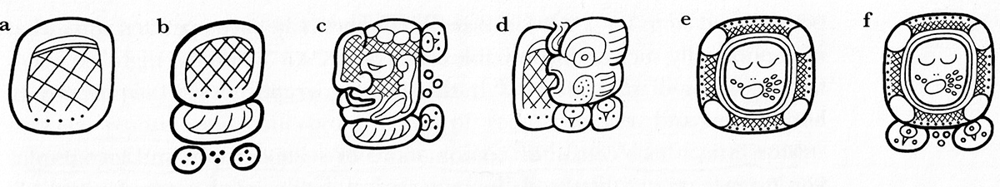
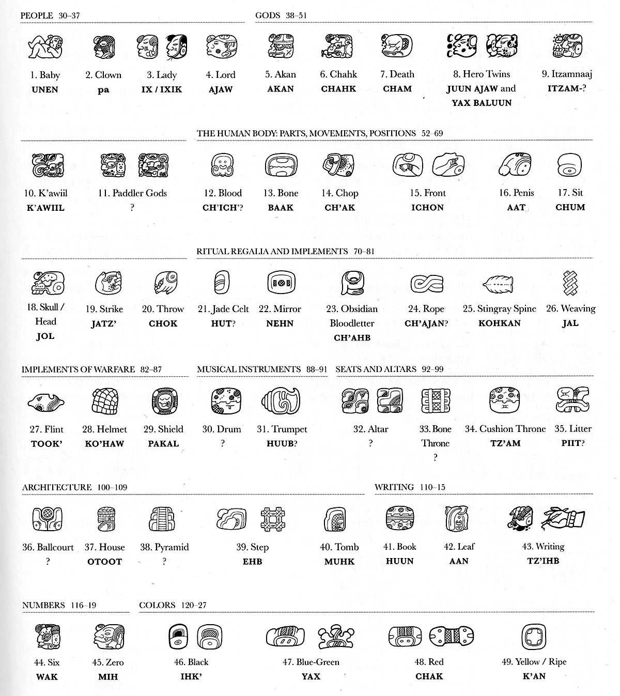
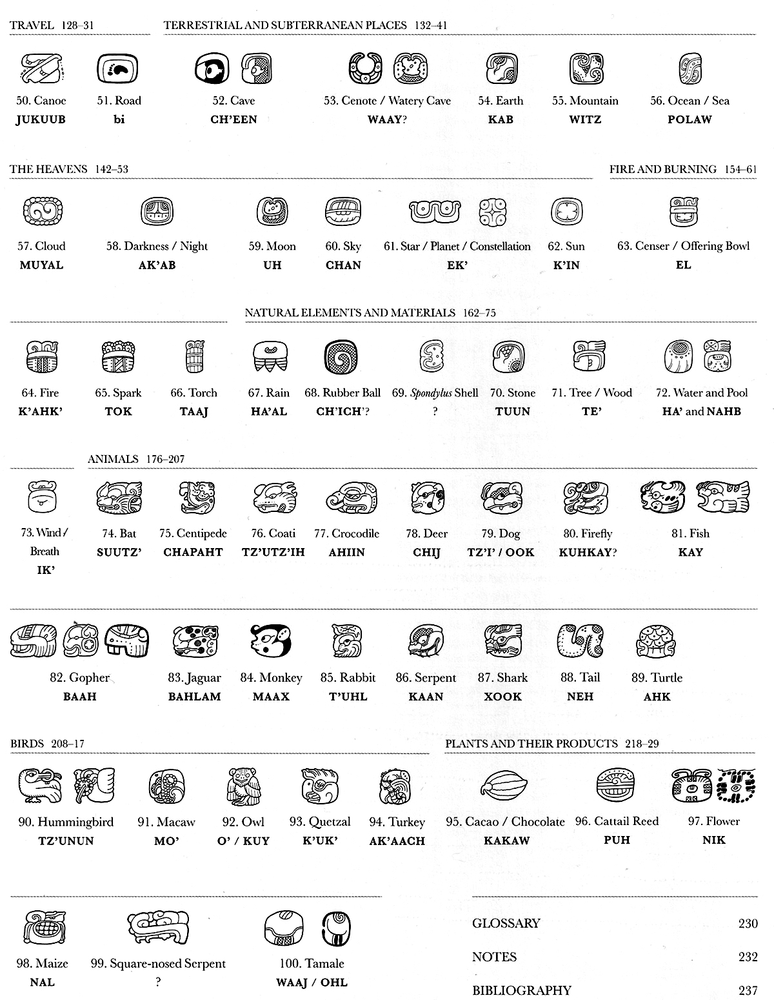
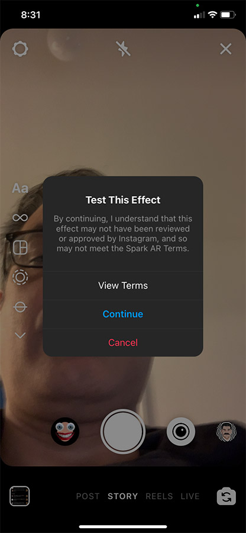
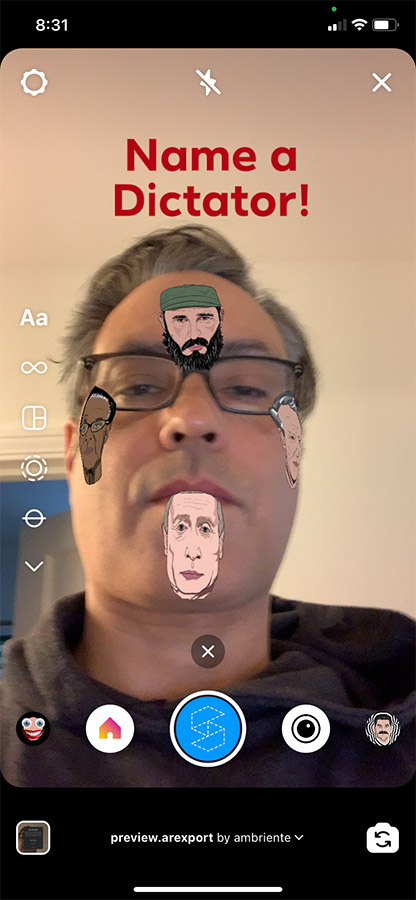
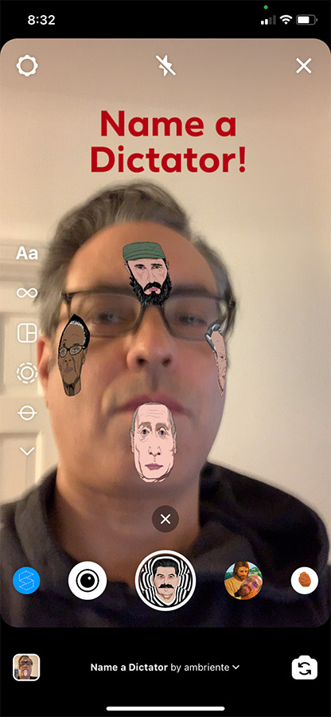

Project 2: Spark AR
Project
Create a series of icons or emojis representing the passing of time. Add the symbols as a clock along the perimeter of user's face.
You are welcome to pursue your own concept, a different idea...
You do not have to publish this project, however, you must upload a screen recording demonstrating the completed project
Inspiration
Ideogram, Pictogram, Logogram, Hieroglyphics, Symbols, Emoticons, Emojis...

Project 2: Spark AR
Inspiration
Mayan Hieroglyphics

from Reading Maya Art by Andrea Stone and Marc Zender, Thames & Hudson
Syllabographs - syllable signs are phonetic. Conjoining consonant and vowel is used to spellout words. Logographs - word signs represent an entire word - LOGO: from Greek logos meaning "word."
a: syllable pa; b: syllables pa-ka-la; c: logograph for clown; d: logograph for fish; e: logograph for pakal, meaning shield; f: logograph for pakal, with phonetic compliment -la;
Project 2: Spark AR
Inspiration
Mayan Hieroglyphics

from Reading Maya Art by Andrea Stone and Marc Zender, Thames & Hudson
Project 2
Inspiration
Mayan Hieroglyphics

from Reading Maya Art by Andrea Stone and Marc Zender, Thames & Hudson
Mayan Calendars
Joge Garza creates Aztec-inspired art.
Project 2
Inspiration
Japanese Emoticons
| Thinking |
Running |
Sleeping |
| (;¬_¬) |
┌༼ σ ‸ σ ༽┐ |
║ * ರ Ĺ̯ ರ * ║ |
| ┗(^o^ )┓三 |
┏( ゜)ਊ゜)┛ |
ε=ε=┏( >_<)┛ |
| (ᵕ≀ ̠ᵕ ) |
(๑ᵕ⌓ᵕ̤) |
✾꒡ .̮ ꒡✾ |
Project
Create a series of icons or emojis representing the passing of time. Add the symbols as a clock along the perimeter of user's face.
You are welcome to pursue your own concept, a different idea...
You do not have to publish this project, however, you must upload a screen recording demonstrating the completed project
Inspiration
Mrzyk & Moriceau
Tomer Hanuka
Istvan Banyai
Spark AR Studio supports PNG and JPG texture files. Files can be a maximum of 1014x1024 pixels in size.
Face Mask Template, Photoshop document
- The Wireframe layer group contains two layers that together represent a 2D version of the Spark AR 3D face mesh.
- The Tracking layer group contains a layer pinpointing the parts of the face that Spark AR tracks when you make a face effect.
- Makeup layer group will help you paint beauty and makeup textures. Follow the shape of the eyeliner, eyeshadow and lips to position the makeup correctly.
- The recommended image size is 1024x1024 pixels which is the maximum file size supported in Spark AR Studio. Despite the large file size, it’s a good idea to export textures with the maximum level of detail, especially when creating a makeup mask.
- A PNG to preserve transparency.
- A JPEG, when you need a smaller file size but no transparency. JPEGs do not have a transparency channel.
- You can use the Save for Web feature in Photoshop to reduce the file size without significantly reducing the quality of your texture. To open this tool:
- Go to File > Export > Save for Web (Legacy).
- In the window that appears, click the 2-UP tab to view your original texture file side-by-side with the current version as you optimize it.
- It’s also a good idea to set the Size/Download speed to the estimated 2 Mbps maximum.
from Techinical Guidelines
Face Tracking Tutorial
- Create New > Face Tracking OR with a Blank Project:
- Click + Add Object and Select the Face Tracker from the list.
- Click Insert, it will be added as a Camera element, nested in Focal Distance.
- Add a title or prompt: Click + Add Object and select 2D Text. Use the Inspector to edit the text.
- Insert a face mesh - Add or + or right-click face tracker > Add > Face Mesh. The face mesh is a 3D model that responds to facial expressions tracked by the face tracker. You'll apply materials to the face mesh to change how it looks - creating the mask effect. Upto five faces may be tracked, numbering starts at 0.
- Create a material for the Face Mesh. In the scene, select faceMesh and now in the inspector (right column), click + for Materials. (Materials can also be created in the Assets panel. To do this, click Add Asset and select Material. To add the material to an object in the scene, go to the Inspector and click the dropdown next to Materials.)
- In Assets, rename the material - material_dictators (something that differentiates between multiple materials).
- In Inspector edit Shader Type.
- Face Paint best for material painted on top of a face. My graphic is not makeup and doesn't need the data for shadows and hightlights (it doesn't emit or respond to light) so I'm using Flat. Flat is generally best for 2D objects. About Spark AR preset materials.
- Import the texture by selecting Choose File next to Texture.
- In the Scene panel, select the faceMask0 and in its inspector add Materials.
- Testing Previewing and Testing Effect - you may test on Instagram, FB or USB connected device.
- If you have downloaded the Spark AR Player to your Android or iPhone you may mirror the effect on your phone. The phone must be connected to the computer via USB before starting up Spark AR and Spark AR Player must be running on the device before you connect the phone to the computer. Once your phone is connected, open Spark AR and your project and click the phone icon near bottom left to preview the effect on your device. When phone is connected, there is a blue dot on the phone icon. Instructions
- You may also send it to your Instagram and/or FB account for publishing via Spark AR Hub by clicking upload button on lower left. If publishing, come up with a title, select a platform, a category (this is under Games and Selfies), demo video, keywords and a 256x256 icon. Below are screenshots of testing on Instagram:
- 
- 
- Published filter:

from Face Tracking Tutorial
❮
❯